マスコットデザイン
ペットを愛するすべての人へ、動物との絆や温かな思い出を届けるIP想定キャラクター
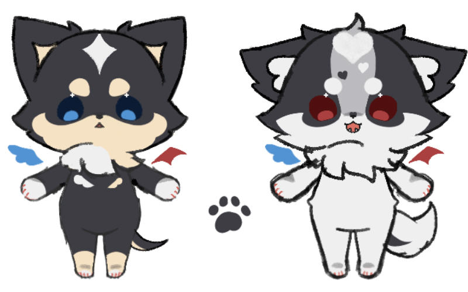
デザイン(6時間)
立ち絵
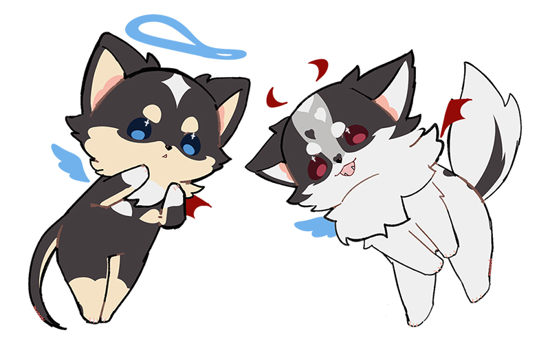
デザイン(6時間)
コンセプトアート
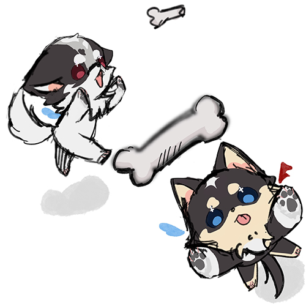
デザイン(2時間)
ターゲット
動物が好きな人 / 過去にペットとの別れを経験した人 / 動物系コンテンツで癒されたい人
デザインについて
人気の高い小型犬であるチワワをモチーフに、アニメやぬいぐるみなどのメディア・グッズ展開を見据えたキャラクターデザインを制作しました。
幅広い層に親しまれることを目指し、親しみやすいデザイン性と立体化のしやすさを意識した企画です。
VTuberと併せた活動での企画コンセプト：お別れしたペットが天使と悪魔になって帰ってきた
ペット単体IPでの企画コンセプト：お別れしたペットの物語
LINEスタンプ想定デザイン


四面図
キャラクター①
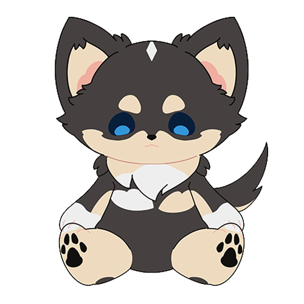
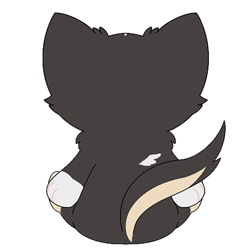
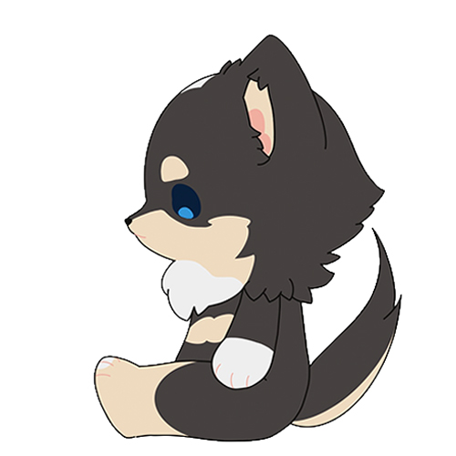
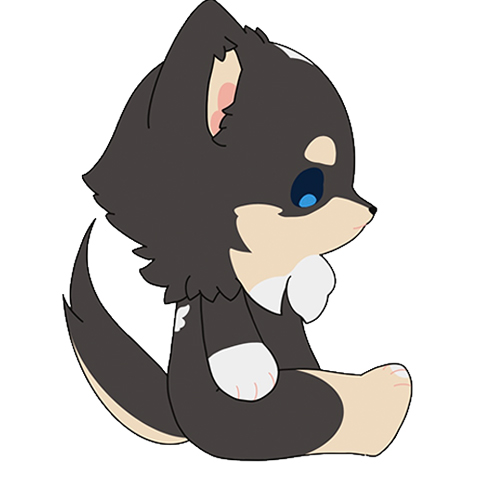
デザイン(6時間)
キャラクター②
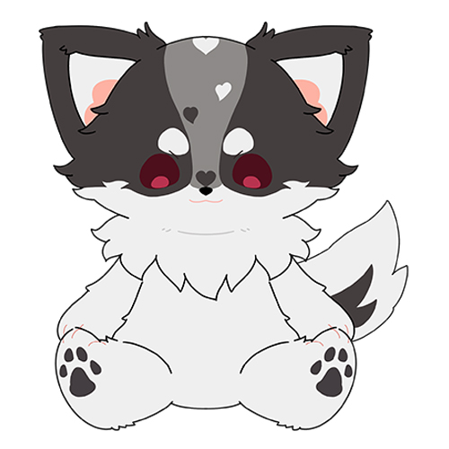
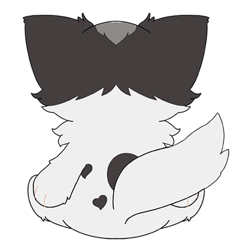
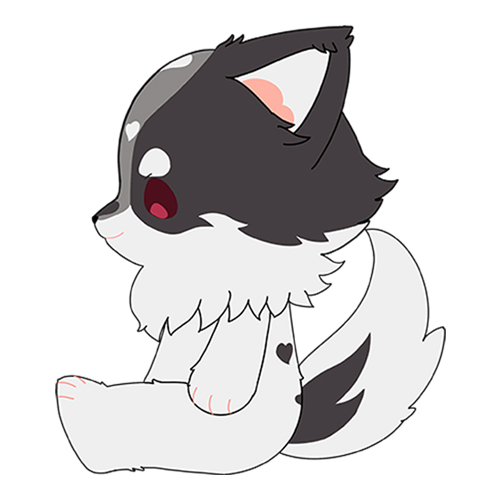
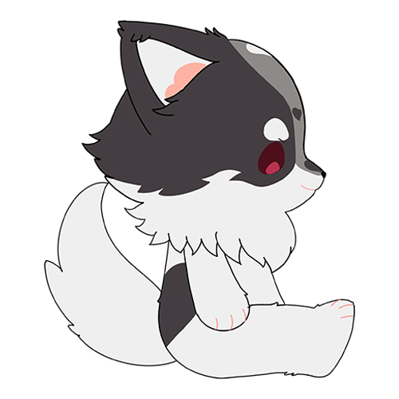
デザイン(4時間)
デザインについて
ぬいぐるみとしての商品化を想定した四面図を、1案・2案として制作しました。
犬好きの方に親しみを感じてもらえるよう、思わず触れたくなるような、ふんわりとした毛並みを意識しています。
正面・側面・背面・上面から形状やバランスを確認できるよう構成し、ぬいぐるみとして立体化しやすいデザインを目指しました。
ぬい風デザイン
キャラクター①
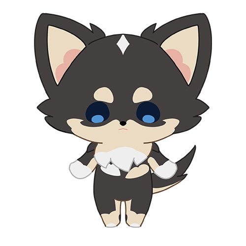
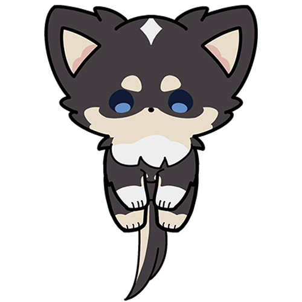
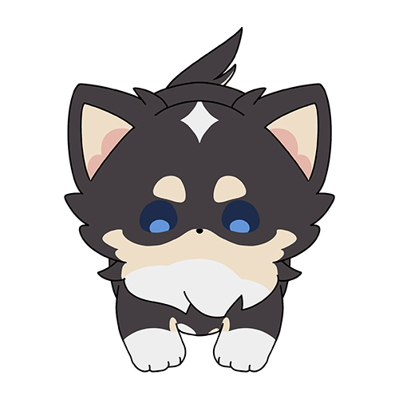
キャラクター②
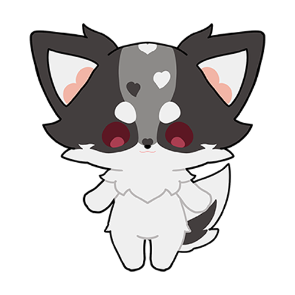
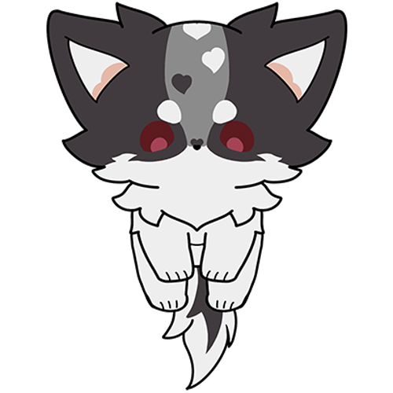
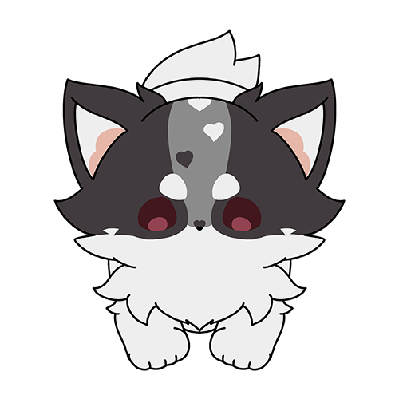
デザイン(4時間)